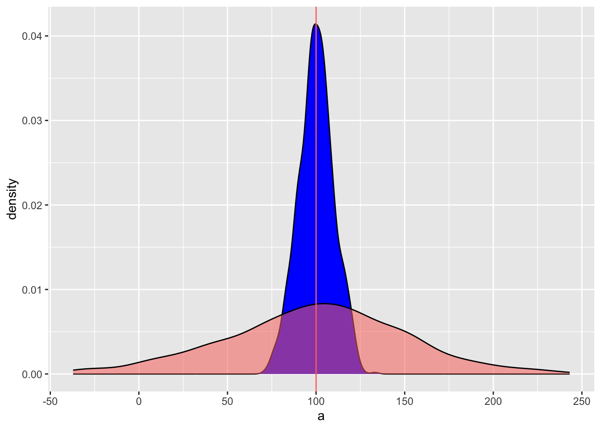
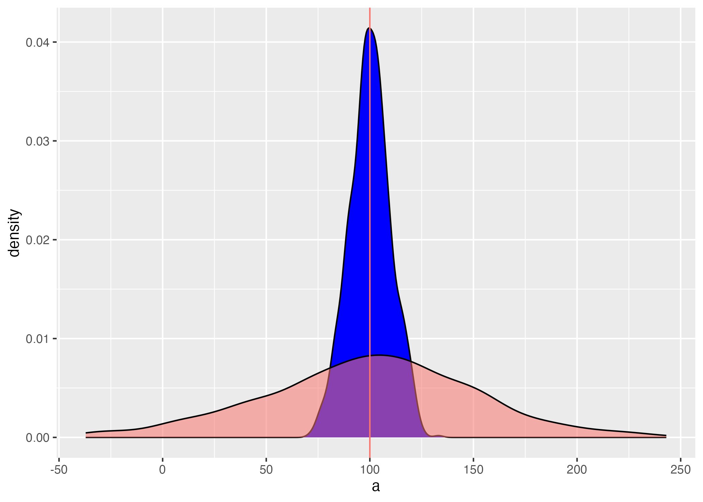
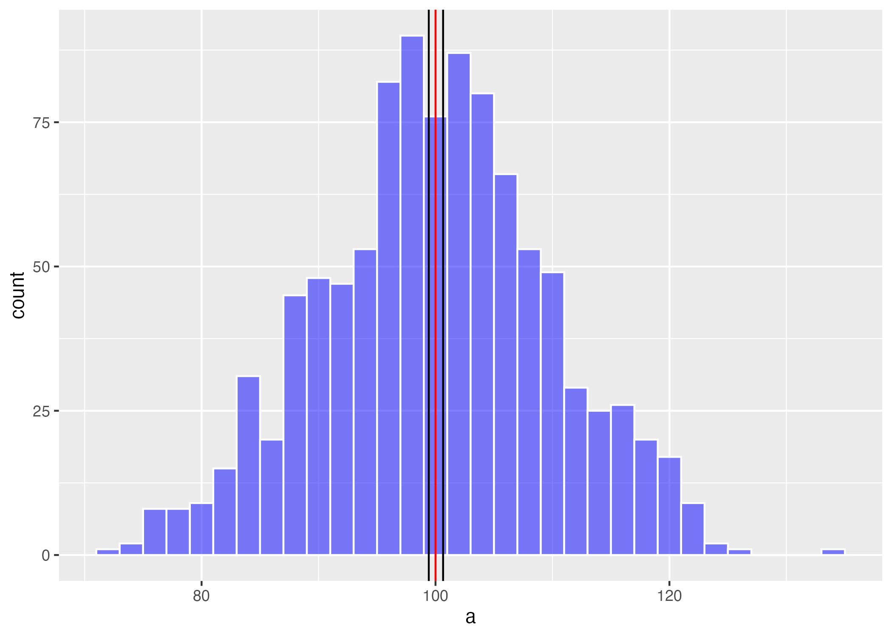
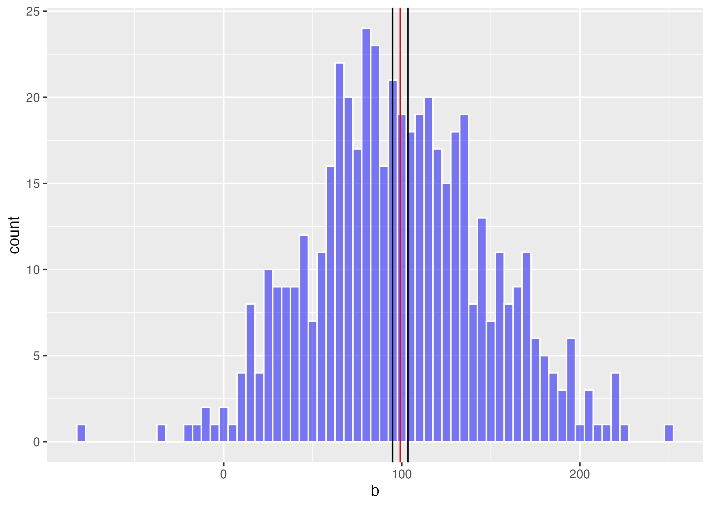
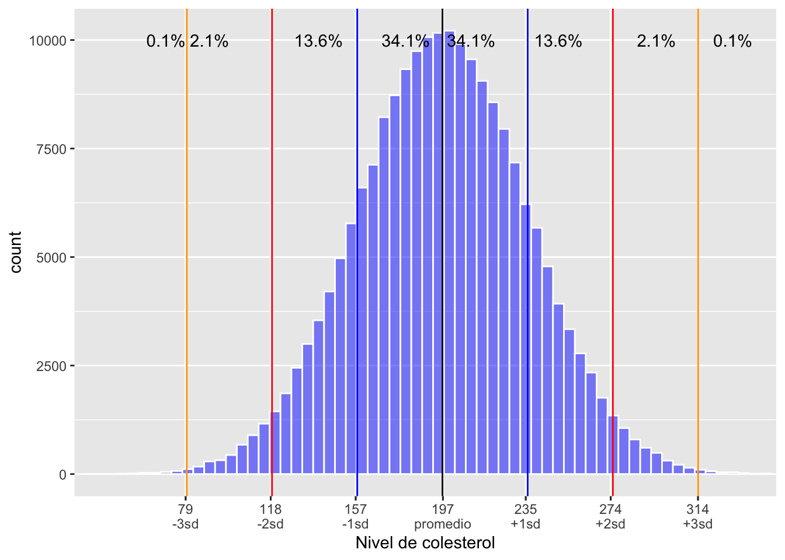

Capítulo 7 Medidas de dispersión
Fecha de la última revisión
## [1] "2026-08-01"

7.1 Qué es la dispersión en estadística
Las medidas o índices de dispersión son indicadores de cuán variables son los datos entre sí. Si todos los valores son iguales, no hay dispersión. Hay múltiples índices de dispersión; vamos a evaluar solamente algunos de ellos. Para más información pueden ir al siguiente enlace https://en.wikipedia.org/wiki/Statistical_dispersion.
Los indices que estaremos estudiando son los siguientes
- el rango
- la varianza
- la desviación estándar
- el error estándar
- el rango intercuartil
- el intervalo de confianza de 95%
7.2 Visualizando la dispersión
Primero miramos un gráfico donde tenemos datos donde el promedio es igual pero las dispersiones son diferentes. Lo que uno observa es que en la distribución azul los datos son más similares entre sí, y en la distribución roja los valores son más diferentes. En el primer conjunto de datos se usa 500 valores con un promedio de 100 y una desviación estándar de 10, en el segundo se produce un conjunto de datos de 500 valores con un promedio de 100 y una desviación estándar de 30.
set.seed(8690) # esto es para que los valores se queden iguales cada vez que se corre el análisis
a=rnorm(1000, 100, 10) # la función para generar datos al azar con una distribución normal
#a
dfa=data.frame(a)
head(dfa, n=10)## a
## 1 122.45061
## 2 96.32812
## 3 97.62805
## 4 104.08504
## 5 87.87156
## 6 96.03265
## 7 95.25282
## 8 93.10139
## 9 120.29985
## 10 110.93526
# r is for random
# norm =distribución normal
#a
b=rnorm(500, 100, 50)
dfb=data.frame(b)
library(ggplot2)
ggplot(dfa, aes(a))+
geom_density(fill="blue")+
geom_density(dfb, mapping=aes(b,fill="red", alpha=.5 ))+
theme(legend.position = "none") +
geom_vline(aes(xintercept = 100, colour="red"))
ggsave("Graficos/dispersion.png")
7.3 El rango
El rango está definido por el valor mínimo y el valor máximo de un conjunto de datos. Se usa la función range(). Usamos los dos conjuntos de datos ya creado anteriormente para visualizar los rangos de la distribuciones de los gráficos. Lo que uno observa es que el valor mínimo del primer conjunto de datos es 59.17 y el máximo es 137.12. Para el segundo conjunto de datos el valor mínimo es 1.86 y el máximo es 203.88.
range(dfa$a) ## [1] 71.43399 133.12174
range(dfb$b)## [1] -37.13864 243.076027.4 Mínimo y máximo
El rango de una distribución es lo mismo que el mínimo y máximo
min(dfa$a)## [1] 71.43399
max(dfa$a)## [1] 133.1217
min(dfb$b, na.rm=TRUE) # si hay valores NA en los datos## [1] -37.13864
max(dfb$b)## [1] 243.0767.5 Ejemplo de la clase
7.5.1 ¿Cuál es el rango de la edad de los padres de los estudiantes cuando nacieron sus hijos?
# Create mode() function to calculate mode
mode <- function(x, na.rm = FALSE) {
if(na.rm){ #if na.rm is TRUE, remove NA values from input x
x = x[!is.na(x)]
}
val <- unique(x)
return(val[which.max(tabulate(match(x, val)))])
}
Edad=c(23, 27, 33, 23, 21, 25, 30, 27, 26, 23,
21, 28, 33, 35, 27, 15, 21, 22, 28, 33,
29, 23, 22, 26, 21, 27, 29, 28)
#Edad
Edad_df=data.frame(Edad)
Edad_df## Edad
## 1 23
## 2 27
## 3 33
## 4 23
## 5 21
## 6 25
## 7 30
## 8 27
## 9 26
## 10 23
## 11 21
## 12 28
## 13 33
## 14 35
## 15 27
## 16 15
## 17 21
## 18 22
## 19 28
## 20 33
## 21 29
## 22 23
## 23 22
## 24 26
## 25 21
## 26 27
## 27 29
## 28 28
range(Edad)## [1] 15 35
range(Edad_df$Edad)## [1] 15 35
mean(Edad_df$Edad)## [1] 25.92857
median(Edad_df$Edad)## [1] 26.5
mode(Edad) # para correr "mode" necesita correr la función mode arriba## [1] 23
var(Edad)## [1] 21.03175
Edad_papa=c(25, 29, 35, 25, 25, 25, 30, 29, 31, 28,
26, 29, 31, 36, 27, 21, 21, 22, 48, 15,
62, 21, 24, 32, 25, 26, 28, 33)
Edad_papa_df=data.frame(Edad_papa)
mean(Edad_papa_df$Edad_papa)## [1] 28.89286
median(Edad_papa_df$Edad_papa)## [1] 27.5
mode(Edad_papa_df$Edad_papa)## [1] 25
range(Edad_papa_df$Edad_papa)## [1] 15 62
var(Edad_papa_df$Edad_papa)## [1] 79.06217
Dist_V=c(14, 71, 16, 43, 32, 17.1, 11, 53, 16.2, 47, 18.2, 39, 9, 16.2)
df=data.frame(Dist_V) # para poner los datos un un data frame
df## Dist_V
## 1 14.0
## 2 71.0
## 3 16.0
## 4 43.0
## 5 32.0
## 6 17.1
## 7 11.0
## 8 53.0
## 9 16.2
## 10 47.0
## 11 18.2
## 12 39.0
## 13 9.0
## 14 16.2Calcular la varianza
var(df$Dist_V)## [1] 359.3963Desviación estándar
sd(df$Dist_V)## [1] 18.95775Error estándar
## [1] 5.06667295% de la distribución
Limite_inferior_a=mean(df$Dist_V)-(error_e*1.96)
Limite_superior_a=mean(df$Dist_V)+(error_e*1.96)
Limite_inferior_a## [1] 18.83361
Limite_superior_a## [1] 38.694967.6 La varianza
La varianza (\(s^2\)) es el promedio de las diferencias al cuadrado entre cada valor y la media (dividido entre \(n-1\)). La desviación estándar (\(s\)) es su raíz cuadrada, y tiene las mismas unidades que los datos.
Los pasos para calcular la varianza son los siguientes
- tener un conjunto de datos, aquí lo llamamos Data
- convertir esta lista en un data frame
- Calcular el promedio de los datos
- restar el promedio a cada valor y elevar la diferencia al cuadrado
- sumar esos cuadrados y dividir entre n-1, donde n es la cantidad de datos
- el numerador se llama la suma de los cuadrados = SS
\[{ s }^{ 2 }=\frac { \sum { { ({ x }_{ i }-\bar { x } })^{ 2 } } }{ n-1 }=\frac{SS}{n-1}\]
library(tidyverse)
Data=c(1,2,3,4,5,6)
Data_df=data.frame(Data)
Data_df## Data
## 1 1
## 2 2
## 3 3
## 4 4
## 5 5
## 6 6
Data_df$mean_Data=mean(Data) # Aqui se añade el promedio a cada fila
Data_df## Data mean_Data
## 1 1 3.5
## 2 2 3.5
## 3 3 3.5
## 4 4 3.5
## 5 5 3.5
## 6 6 3.5
Data_df$Diff=Data_df$Data-Data_df$mean_Data
# Calcular la diferencia entre el promedio y el valor x
sum(Data_df$Diff) # si las diferencias no se elevan al cuadrado, la suma será cero.## [1] 0
Data_df$SS=(Data_df$Data-Data_df$mean_Data)^2 # SS para la suma de los cuadrados
Data_df## Data mean_Data Diff SS
## 1 1 3.5 -2.5 6.25
## 2 2 3.5 -1.5 2.25
## 3 3 3.5 -0.5 0.25
## 4 4 3.5 0.5 0.25
## 5 5 3.5 1.5 2.25
## 6 6 3.5 2.5 6.25
sum(Data_df$SS)## [1] 17.57.7 Calcular la varianza con var()
Ahora la manera fácil de hacer los análisis, usar la función var, y no hay que hacer ninguno de los pasos anteriores. Pero es importante que sepa como es el procedimiento de calcular la varianza. Nota que la varianza es un índice de la diferencia entre el promedio y cada valor. Es importante elevar al cuadrado las diferencias; de lo contrario, la suma sería cero. La varianza es más informativa cuando los datos provienen de una distribución aproximadamente normal y no están muy sesgados.
var(Data)## [1] 3.57.8 La desviación estándar
La varianza es un índice que no está en la misma unidad que los valores recolectados; por ejemplo, si se recolectan los datos en centímetros, la varianza está en centímetros cuadrados. Por eso no siempre es la mejor para describir la dispersión. Para resolver esto, sacamos la raíz cuadrada de la varianza. La desviación estándar se usa para describir la dispersión; en otras palabras, cuán diferentes son los datos entre sí. Es más informativa cuando los datos provienen de una distribución aproximadamente normal y no están muy sesgados.
\[{ s }=\sqrt { \frac { \sum { { ({ x }_{ i }-\bar { x } })^{ 2 } } }{ n-1 } }\] o más sencillo
\[s=\sqrt{s^2}\]
la función sd, “standard deviation” es sumamente fácil de calcular en R.
sd(Data_df$Data) # deviación estandard## [1] 1.8708297.9 El rango intercuartil
La función básica es quantile; si la dejamos sin más instrucciones, calcula las siguientes probabilidades: 0%, 25%, 50% (mediana), 75% y 100%. Pero si uno quiere los valores que se encuentran en una posición específica hay que usar type = 1, como se ve en el segundo ejemplo. Hay 9 tipos de cuantiles con esta función, definidos en RStudio. Escribe ?quantile en la consola o en el área de help para ver las otras alternativas.
quantile(Data) # la función básica (0%, 25%, 50% (mediana), 75%, 100%)## 0% 25% 50% 75% 100%
## 1.00 2.25 3.50 4.75 6.00## 2.5% 25% 50% 75% 97.5%
## 1.125 2.250 3.500 4.750 5.875Para explicar estos conceptos mejor visualizamos los datos
| i | x[i] | Mediana | Cuartiles |
|---|---|---|---|
| 1 | 03 | ||
| 2 | 19 | ||
| 3 | 27 | ||
| 4 | 33 | Q1=33 | |
| 5 | 52 | ||
| 6 | 60 | ||
| 7 | 77 | ||
| 8 | 87 | Q2=87 | |
| 9 | 99 | ||
| 10 | 101 | ||
| 11 | 122 | ||
| 12 | 137 | Q3=137 | |
| 13 | 140 | ||
| 14 | 142 | ||
| 15 | 150 |
Ahora usamos la función quantile con el type=1 de calcular los cuartiles y ver si tenemos los mismos resultados.
## 0% 25% 50% 75% 100%
## 3 33 87 137 150
sd(dat)## [1] 49.21457.10 El error estándar
El término correcto es error estándar de la media, pero típicamente se acorta a error estándar. El error estándar describe la posible dispersión del promedio; en otras palabras, cuán confiados estamos en el estimado del promedio. Cuanto más grande es el error estándar, menos confiados estamos en el promedio.
No confundas la desviación estándar con el error estándar. La desviación estándar describe cuánto varían los datos entre sí. El error estándar describe cuánto variaría el promedio si repitiéramos el muestreo: \(ES = s/\sqrt{n}\). Por eso el error estándar siempre es menor que la desviación estándar y disminuye al aumentar \(n\).
La formula de error estándar es la siguiente usando la desviación estándar
\[s_{\overline{x}}=\frac{s}{\sqrt{n}}\]
o usando la varianza, donde la n es la cantidad de datos
\[s_{\overline{x}}=\sqrt{\frac{s^2}{n}}\]
Ahora usamos los datos mostrados al principio del módulo. Calculamos el error estándar de ambas distribuciones (es = error estándar). No hay una función en R base para el error estándar, así que creamos la fórmula. Vemos que cuando hay más dispersión, el error estándar es más grande.
length(dfa$a)## [1] 1000## [1] 0.312044
es_b## [1] 2.2630167.11 El intervalo de confianza de 95% del promedio
Ya que hemos calculado el error estándar podemos calcular la dispersión de los promedios. Esto quiere decir que, si repitiéramos el estudio muchas veces, el 95% de los intervalos calculados así contendrían el verdadero promedio de la población. Uno calcula los límites usando las siguientes fórmulas.
Un intervalo de confianza del 95% no significa que haya 95% de probabilidad de que el verdadero promedio esté en este intervalo concreto. Significa que, si repitiéramos el estudio muchas veces, aproximadamente el 95% de los intervalos así construidos contendrían el verdadero promedio de la población.
\[\text{Límite 95\% superior} = \overline{x} + \left(ES \cdot 1.96\right)\]
\[\text{Límite 95\% inferior} = \overline{x} - \left(ES \cdot 1.96\right)\]
Limite_inferior_a=mean(dfa$a)-(es_a*1.96)
Limite_superior_a=mean(dfa$a)+(es_a*1.96)
Limite_inferior_a # limite inferior 95%## [1] 99.42551
mean(dfa$a) # El promedio## [1] 100.0371
Limite_superior_a # el limite superior 95%## [1] 100.6487
Limite_inferior_b=mean(dfb$b)-(es_b*1.96)
Limite_superior_b=mean(dfb$b)+(es_b*1.96)
mean_b=mean(dfb$b)
Limite_inferior_b## [1] 95.22752
mean(dfb$b)## [1] 99.66303
Limite_superior_b## [1] 104.0985Visualizando el intervalos de confianza del promedio. Lo que uno observa es que el promedio puede quedar en lugares diferentes porque el conjunto de datos fue más pequeño en el segundo gráfico. Además vemos que el intervalo de 95% de confianza del promedio en el segundo es más amplio.

CI_b=ggplot(dfb, aes(b))+
geom_histogram(fill="blue", colour="white", alpha=.5, binwidth = 5)+
theme(legend.position = "none") +
geom_vline(aes(xintercept =mean_b), colour="red")+
geom_vline(aes(xintercept = Limite_inferior_b), colour="black")+
geom_vline(aes(xintercept = Limite_superior_b), colour="black")
ggsave("Graficos/CI_b.png")
#library(easyGgplot2)
#ggplot2.multiplot(CI_b.png,CI_b.png, cols=2)7.12 El intervalo de confianza de los datos
Para tener una idea de la distribución de los datos y de cuál es el porcentaje de valores incluido (asumiendo una distribución normal), podemos crear un gráfico que muestra el porcentaje incluido según la desviación estándar. Nota que aquí no se trata de la dispersión del promedio, sino de la dispersión de los datos en la población.
7.13 Rangos incluidos en intervalos de confianza
Calculamos el promedio y la desviación estándar de los datos; lo haremos por género. El rango promedio ± 1 sd incluye 68.2% de los datos, promedio ± 2 sd incluye 95.4% de los datos,
require(pander)
panderOptions('table.split.table', Inf)
set.caption("Rangos incluidos en intervalos de confianza")
my.data <- "
| sd | rango incluido |
| 0 | el promedio |
| ±1 | 68.2% |
| ±2 | 95.4% |
| ±3 | 99.7% |
| ±4 | 99.99% |"
df <- read.delim(textConnection(my.data),header=FALSE,sep="|",strip.white=TRUE,stringsAsFactors=FALSE)
names(df) <- unname(as.list(df[1,])) # put headers on
df <- df[-1,c(-1,-4)] # remove first row
row.names(df)<-NULL
pander(df, style = 'rmarkdown')| sd | rango incluido |
|---|---|
| 0 | el promedio |
| ±1 | 68.2% |
| ±2 | 95.4% |
| ±3 | 99.7% |
| ±4 | 99.99% |
7.14 Ejemplo del intervalo de confianza
7.14.1 El intervalo de confianza del colesterol en los iraníes
Comenzamos con evaluar el intervalo de confianza de los datos con datos teóricos. Por ejemplo, el nivel de colesterol en el plasma varía en los humanos. En el siguiente artículo Plasma total cholesterol level and some related factors in northern Iranian people. https://www.ncbi.nlm.nih.gov/pmc/articles/PMC3783780/
Usamos los datos para las mujeres con un promedio de 196.7 y una desviación estándar de 39.11. Con estos datos asumimos que provienen de una distribución normal y que representan a las mujeres del resto del mundo.
# Creamos un conjunto de datos para los análisis
Col=rnorm(200000, 196.7, 39.11)
Col=data.frame(Col)
promCol=Col%>%
summarise(Mean=mean(Col))
sdCol=Col%>%
summarise(sd=sd(Col))Visualizar los datos: ¿Conoce su nivel de colesterol total? ¿Dónde se encuentra en esta distribución? ¿Está dentro del 68%? Nota que la suma de todos los porcentajes es igual a 100%.
library(grid)
library(gtable)
lims <- c(28, 350)
breaks.major2<-c(0, 79, 118, 157,
197, 235, 274, 314)
breaks.minor2= c(79, 118, 157,197,
235, 274, 314,379)
breaks.comb <- sort(c(breaks.major2, breaks.minor2-1.0E-6))
labels.comb<- c(0, 79, "\n-3sd", 118, "\n-2sd", 157, "\n-1sd", 197, "\npromedio",
235, "\n+1sd",274, "\n+2sd", 314,"\n+3sd", 379)
Colesterol_Inter=Col%>%
ggplot(aes(Col))+
geom_histogram(fill="blue", colour="white",alpha=.5, binwidth = 5)+
theme(legend.position = "none")+
geom_vline(xintercept=as.numeric(promCol), colour="black")+
geom_vline(aes(xintercept = as.numeric(promCol-sdCol)), colour="blue")+
geom_vline(aes(xintercept = as.numeric(promCol+sdCol)), colour="blue")+
geom_vline(aes(xintercept = as.numeric(promCol-2*sdCol)), colour="red")+
geom_vline(aes(xintercept = as.numeric(promCol+2*sdCol)), colour="red")+
geom_vline(aes(xintercept = as.numeric(promCol-3*sdCol)), colour="orange")+
geom_vline(aes(xintercept = as.numeric(promCol+3*sdCol)), colour="orange")+
scale_x_continuous(expand=c(0,0), limit=lims,
minor_breaks=breaks.minor2,
breaks=breaks.comb,
labels=labels.comb)+
xlab("Nivel de colesterol")+
annotate("text", x=180, y = 10000, label="34.1%")+
annotate("text", x=210, y = 10000, label="34.1%")+
annotate("text", x=140, y = 10000, label="13.6%")+
annotate("text", x=250, y = 10000, label="13.6%")+
annotate("text", x=90, y = 10000, label="2.1%")+
annotate("text", x=295, y = 10000, label="2.1%")+
annotate("text", x=70, y = 10000, label="0.1%")+
annotate("text", x=330, y = 10000, label="0.1%")
Colesterol_Inter
ggsave("Graficos/Colesterol_Inter.png")7.15 Otro ejemplo de los intervalos de confianza
7.15.1 La altura de los humanos
Para evaluar el 95% de intervalo de confianza usaremos datos de la alturas de 500 adultos. Estos datos fueron descargados del siguiente sitio web. Están disponibles debajo, en la pestaña de “Los Datos”. https://www.kaggle.com/yersever/500-person-gender-height-weight-bodymassindex/data
library(readr)
library(gt)
Alturas_Humanos <- read_csv("Data_files_csv/Alturas_Humanos.csv")
gt(head(Alturas_Humanos))| Genero | Altura_cm | Peso_kg |
|---|---|---|
| Hombres | 174 | 96 |
| Hombres | 189 | 87 |
| Mujer | 185 | 110 |
| Mujer | 195 | 104 |
| Hombres | 149 | 61 |
| Hombres | 189 | 104 |
Calculamos los promedios y las desviación estándar para añadirlos al gráfico
## # A tibble: 6 × 3
## Genero Altura_cm Peso_kg
## <chr> <dbl> <dbl>
## 1 Hombres 174 96
## 2 Hombres 189 87
## 3 Mujer 185 110
## 4 Mujer 195 104
## 5 Hombres 149 61
## 6 Hombres 189 104
length(Alturas_Humanos$Genero)## [1] 500
# Parametros para las Mujeres
promM=Alturas_Humanos%>%
dplyr::select(Genero, Altura_cm)%>%
filter(Genero=="Mujer")%>%
summarise(MeanM=mean(Altura_cm))
promM ## # A tibble: 1 × 1
## MeanM
## <dbl>
## 1 170.
sdM=Alturas_Humanos%>%
dplyr::select(Genero, Altura_cm)%>%
filter(Genero=="Mujer")%>%
summarise(sd=sd(Altura_cm))
sdM ## # A tibble: 1 × 1
## sd
## <dbl>
## 1 15.7
# Parametros para las Hombres
promH=Alturas_Humanos%>%
dplyr::select(Genero, Altura_cm)%>%
filter(Genero=="Hombres")%>%
summarise(Mean=mean(Altura_cm))
sdH=Alturas_Humanos%>%
dplyr::select(Genero, Altura_cm)%>%
filter(Genero=="Hombres")%>%
summarise(sd=sd(Altura_cm))Aquí el gráfico de la distribución de los datos con un histograma, y promedio (negro), el rango de 68% entre las barras azules y el de 95% entre las barras rojas.
Alturas_Mujer=Alturas_Humanos%>%
dplyr::select(Genero, Altura_cm)%>%
filter(Genero=="Mujer")%>%
ggplot(aes(Altura_cm))+
geom_histogram(fill="blue", colour="yellow",alpha=.5)+
theme(legend.position = "none")+
geom_vline(xintercept=as.numeric(promM), colour="black")+
geom_vline(aes(xintercept = as.numeric(promM-sdM)), colour="blue", size=1)+
geom_vline(aes(xintercept = as.numeric(promM+sdM)), colour="blue")+
geom_vline(aes(xintercept = as.numeric(promM-2*sdM)), colour="red")+
geom_vline(aes(xintercept = as.numeric(promM+2*sdM)), colour="red")
ggsave("Graficos/Alturas_Mujer.jpeg") # .png, .tiff, etc7.16 Ejercicios de práctica para entender el concepto de Medidas de dispersión
7.16.2 Ejercicio 2: Calcula los siguientes indices de dispersión
- el rango
- la varianza
- la desviación estándar
- el error estándar
- el rango intercuartil
- el intervalo de confianza de 95%
La cantidad de pisos de los edificios más altos del mundo.
88, 88, 110, 88, 80, 69, 102, 78, 70, 55, 79, 85, 80, 100, 60, 90, 77, 55, 75, 55, 54, 60, 75, 64, 105, 56, 71, 70, 65, 72